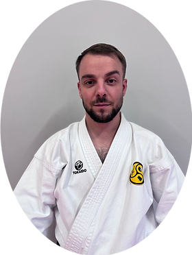
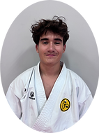
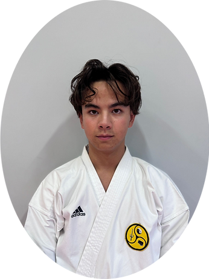
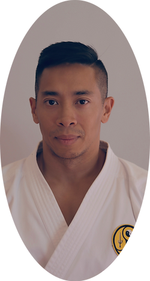
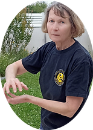

Notre école de karaté, style Shorinji Ryu, offre à nos élèves un enseignement complet par l'apprentissage de toutes les techniques de karaté traditionnel, mais aussi par le maniement des armes anciennes (Kobudo), ainsi que par la pratique du Tai Chi Chuan.
Le mardi de 18h15 à 19h15
et
Le vendredi de 18h15 à 19h30
Le mardi de 19h15 à 20h30
Le vendredi de 19h30 à 21h00
Le samedi de 14h00 à 15h30
Salle au 1er étage — 7 rue de l'Espérance, 91800 Brunoy
Le style Shorinji Ryu (少林寺流) s'inscrit au cœur des traditions originelles du Karaté d'Okinawa. Notre école enseigne un art martial complet articulé autour de trois piliers indissociables :
Kihon (fondations), Kata (formes codifiées) et Kumite (combat). Positions naturelles et mobiles (Shizentai), esquives rapides, précision des frappes sur les points vitaux. Un karaté d'efficacité, fidèle aux origines d'Okinawa.
Pratique complémentaire du maniement des armes traditionnelles d'Okinawa : Bō (bâton long), Saï (trident métallique), Tonfa et Nunchaku. Le Kobudo renforce la coordination, la poigne et la maîtrise corporelle du karatéka.
Art interne chinois axé sur la fluidité des mouvements, la maîtrise du souffle (Chi Kung) et l'harmonie corps-esprit. Accessible à tous les âges, le Tai Chi Chuan apporte sérénité, équilibre et santé durable.
Gymnase Pierre de Coubertin à Brunoy — 7 rue de l'espérance — salle au 1er étage
Notre association souhaite faciliter l'accès à la pratique des arts martiaux pour tous et propose plusieurs facilités de règlement.
Le Pass Sport (aide gouvernementale de 50€) est accepté pour financer votre cotisation. Nous acceptons également les Chèques Vacances ANCV, les Coupons Sport ANCV et les Tickets Loisirs.
Nos instructeurs et assistants bénévoles transmettent avec passion la rigueur et les valeurs du Karaté Shorinji Ryu et du Tai Chi Chuan.

Instructeur Principal Karaté (Titulaire du DIF*)
Responsable de l'enseignement technique et de l'encadrement des cours karaté.

Instructeur Principal Karaté (Titulaire du DIF*)
Instructeur référent, développement des techniques et suivi pédagogique des élèves.

Senpai Nathan BAUDRON
Assistant Karaté (Titulaire du DIF*)

Senpai Gaston NGUYEN
Assistant Karaté (Titulaire du DIF*)
Senpai Diane SLUSAREK
Assistante Karaté (Titulaire du DIF*)
Bénévoles qualifiées participant activement à l'animation et au soutien des cours.
Marion
Titulaire de l'AFA*
Anaïs
Titulaire de l'AFA*
Cours dispensés par Sensei Solange BUCQUET et son équipe d'assistantes.

Sensei Solange BUCQUET
Professeure Référente (Titulaire du DIF*)

Martine DEUMIER
Assistante Tai Chi
Mireille CASERUS
Assistante Tai Chi
Diane SLUSAREK
Assistante Tai Chi (Titulaire du DIF*)
* DIF : Diplôme d'Instructeur Fédéral (qualification officielle d'enseignement délivrée par la Fédération Française de Karaté - FFKaraté).
* AFA : Attestation Fédérale d'Assistant (diplôme officiel d'assistance pédagogique délivré par la FFKaraté).
Hommage solennel aux maîtres fondateurs qui ont créé, structuré et fait rayonner l'école Arts Martiaux de Brunoy.
.jpg)
Fondateur de l'AMB (6e Dan)
Pionnier de la transmission du Karaté traditionnel style Shorinji Ryu en Essonne. Il a formé des générations de ceintures noires avec dévouement et exigence.
.jpg)
Ancienne Maître (5e Dan)
Figure emblématique de notre école. Elle a grandement œuvré à la transmission spirituelle, à la précision technique et à la dimension humaine au sein du dojo.
La pratique du Kobudo fait partie intégrante de l'enseignement dispensé dans notre école. Le maniement des armes anciennes d'Okinawa (Bō, Saï, Tonfa, Nunchaku) développe la coordination, la précision, les réflexes et la puissance du pratiquant.
Le Kobudo est enseigné en complément direct du Karaté, dans la plus pure tradition du style Shorinji Ryu unissant le combat à mains nues et les armes traditionnelles.
En savoir plus sur le Kobudo →Conformément à la loi du 24 août 2021 confortant le respect des principes de la République, l'association Arts Martiaux de Brunoy a souscrit au Contrat d'Engagement Républicain.
À ce titre, notre association et ses encadrants s'engagent formellement à :
Cet engagement est le socle de notre agrément et de notre partenariat continu avec la Ville de Brunoy et le Ministère des Sports.
Le respect de l'étiquette martiale du dojo (Reishiki) est au cœur de notre enseignement. Ces règles assurent la sécurité, le respect mutuel et la sérénité des entraînements.
Retrouvez les élèves et les enseignants lors de notre grande démonstration martiale annuelle de fin de saison.
Samedi 19 Juin 2027 (Date provisoire)
Gymnase Pierre de Coubertin, Salle du 1er étage — Brunoy
Démonstrations des enfants, ados et adultes en Karaté traditionnel, Kobudo et Tai Chi Chuan.
Pour toute inscription, vous pouvez télécharger la fiche d'inscription ou venir directement essayer un cours gratuitement au gymnase.
Consulter les modalités d'inscription
Arts Martiaux de Brunoy
Gymnase Pierre de Coubertin (1er étage)
7 rue de l'Espérance, 91800 Brunoy
Téléphone : 06 30 08 88 04
Courriel : ambkarate91@gmail.com